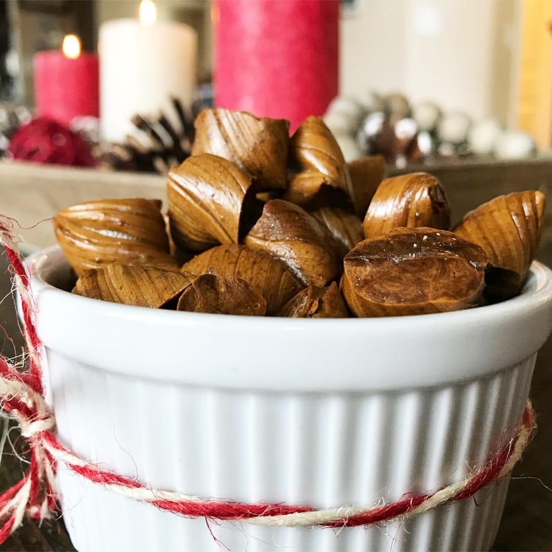

Molasses

Description
Jessica made this candy years ago and put it in one of our journals. At the last minute one day I decided to whip up a batch. It was going so well, I thought I’d get a quick video. Quick and easy molasses candy is a recipe you’ll keep.
Ingredients
- 1 c. molasses
- 1 c. sugar
- 1 Tbsp. butter
- 1 Tbsp. white or apple cider vinegar
- 1 tsp. baking soda
Steps
- Butter two glass pie pans and set aside. You will need a candy thermometer. In a 3 qt. heavy bottom saucepan, stir together the molasses, sugar, butter, and vinegar.
- Bring to a boil over medium-high heat, stirring just until the mixture comes to a boil. Clip a candy thermometer on the side, make sure it doesn’t touch the bottom of the pan. Without stirring, boil over medium heat until the syrup reaches 265 degrees.
- Add the baking soda stir.
- Pour the molasses candy mixture into your two prepared pie pans, dividing it evenly between the two.
- Let the molasses candy cool until you can handle it but it’s still warm. Work with one batch at a time. Begin pulling the molasses candy into ropes. This is very simple! Pull the candy, double over and pull again. See the video.
- Continue pulling and doubling until the molasses candy is shiny and golden in color. Quickly stretch into a rope about 1/2″ wide. With a pair of kitchen scissors or just a sharp knife, cut the candy into 3/4″ pieces. Let all the molasses candy cool completely. Store in airtight containers. Makes about 6-7 dozen.